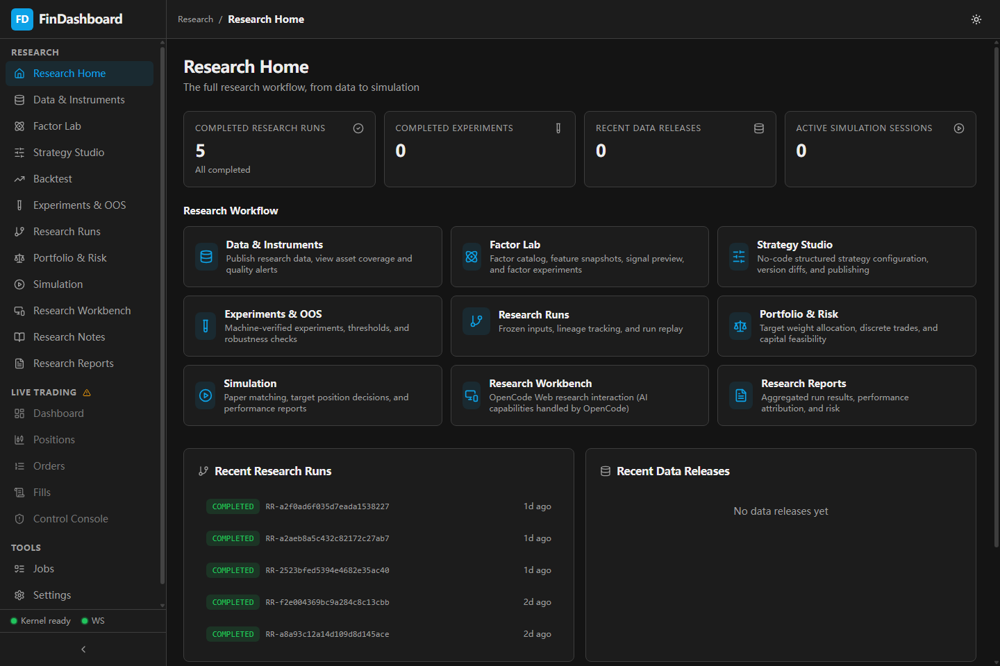
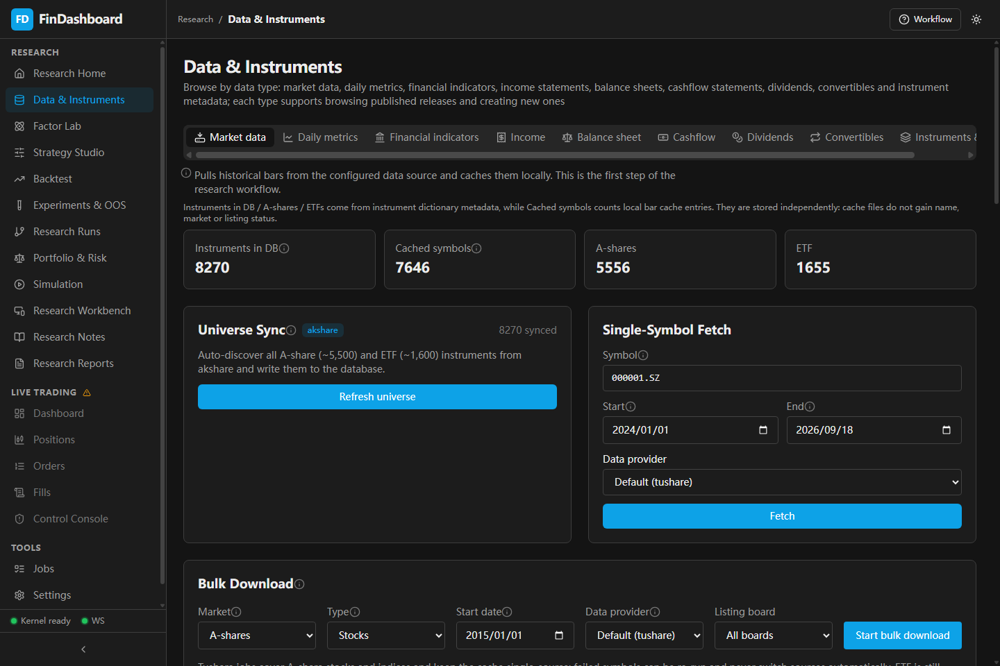
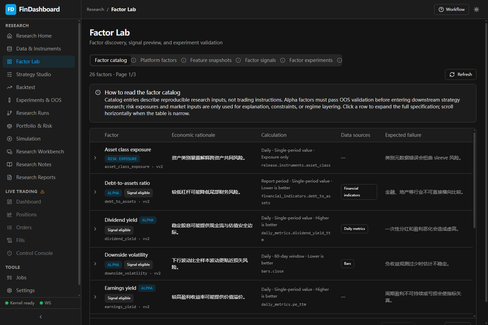
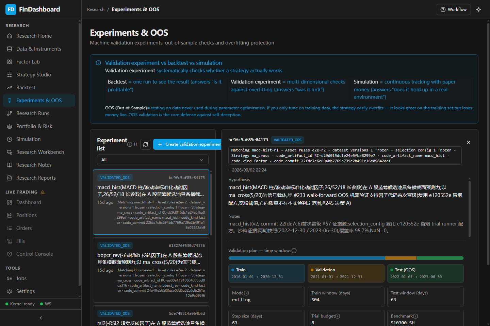
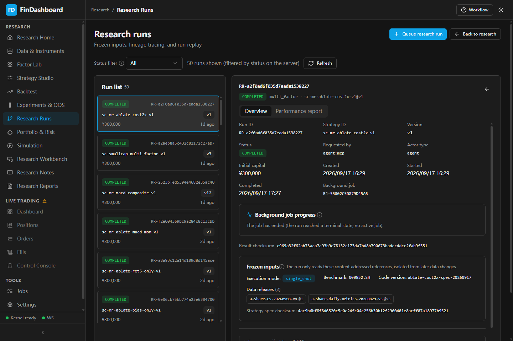
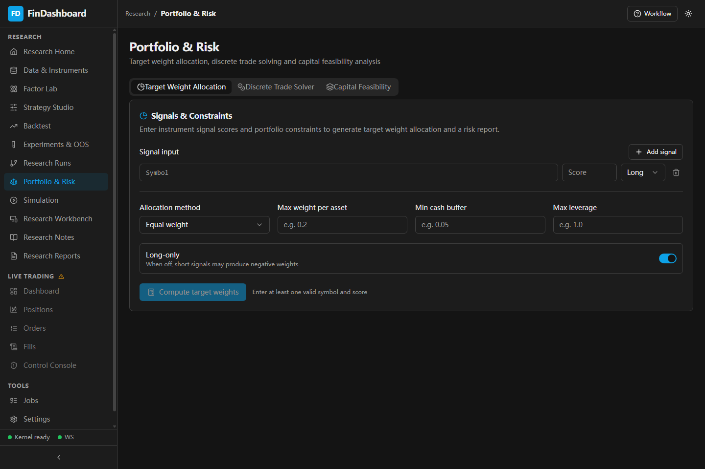
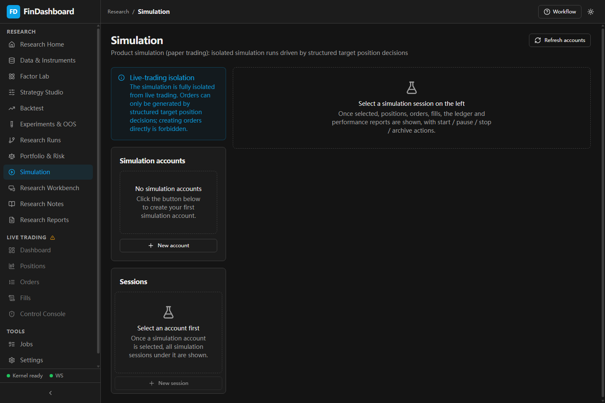
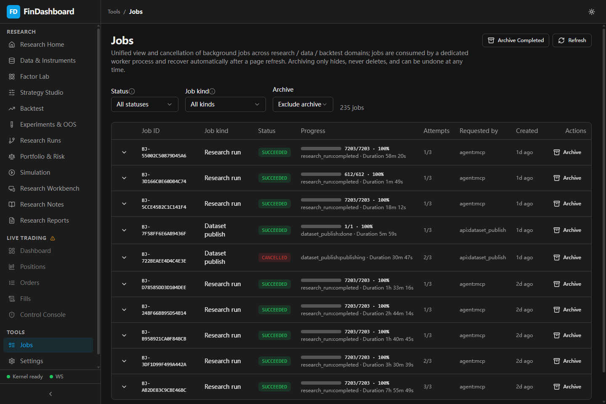

Test whether cross-sectional momentum produces stable, cost-aware out-of-sample excess returns. If evidence is weak, stop promotion, retain the failure, and prevent blind retesting.
0.1.0dev preview Local research data · Mock broker · Worker disabled
Quant research that can explain itself.
FinDashboard gives research agents room to investigate while keeping every input, decision, and result traceable. Evidence must pass frozen-data, out-of-sample, and portfolio gates before it can move closer to capital.
- Captured
- 2026-09-18
- Source
- Real local research DB
- Live trading
- Still gated

Typical scenario
Should an A-share cross-sectional signal be allowed to advance?
The system must preserve a negative answer as carefully as a positive one.The product must answer three questions.
- 01What was knowable?
Point-in-time data and immutable releases.
- 02What exactly ran?
Versioned strategy, manifest, fees, constraints, and checksums.
- 03Why trust the outcome?
Pre-registered OOS gates, explicit failures, and durable audit trails.
Scroll-driven walkthrough
One hypothesis, seven auditable operations.
Scroll through the steps. The product window stays pinned while the evidence advances.






-
01 Select a frozen data release
Fix what could be known at decision time.
Choose the instrument scope, date range, quality report, and release ID. Research refers to an immutable release, while financial observations remain bounded by
available_at ≤ decision_at.- Evidence
- Release ID, checksum, coverage, quality warnings
- Fail closed
- A missing primary bars instrument blocks the run
-
02 Define the factor and direction
Turn an economic idea into a reviewable signal.
The catalog records rationale, calculation, source fields, frequency, expected direction, and known failure modes. User code stays isolated until sandbox and promotion gates pass.
- Evidence
- Definition, version, provenance, expected direction
- Fail closed
- Inactive or failed user factors cannot enter a strategy
-
03 Pre-register and run OOS validation
Write the test before revealing the answer.
Freeze the train, validation, and final test windows with thresholds and experiment budget. Completion means the process ran; support must be read from
oos_outcome.- Evidence
- Hypothesis, windows, trial count, reveal state, outcome
- Fail closed
- The final test reveal is one-way and cannot be rerun
-
04 Inspect ResearchRun lineage
Trace every result back to its inputs.
Each run binds the strategy version, data release, fees, portfolio constraints, artifacts, and result checksum. Rejected, failed, and interrupted runs remain visible beside completed ones.
- Evidence
- RR-*, manifest, strategy commit, checksums, artifacts
- Fail closed
- Manifest drift or missing frozen inputs stops execution
-
05 Apply portfolio constraints
Prove the signal can survive portfolio reality.
Convert approved signals into target weights under concentration, risk-contribution, cash, leverage, discrete-lot, and capital-feasibility constraints.
- Evidence
- Constraint set, solver outcome, three capital tiers
- Fail closed
- Infeasible risk contribution blocks research orders
-
06 Promote to isolated simulation
Move only qualified targets into a separate ledger.
Simulation accepts published strategies and structured targets from completed ResearchRuns. It does not connect to a broker, alter live positions, or auto-promote itself.
- Evidence
- SIM-* session, simulation orders, fills, positions, cash
- Truthful state
- This capture has no simulation account, so the UI stays empty
-
07 Review the durable audit trail
Keep success, failure, interruption, and retry inspectable.
The job center exposes status, phase, progress, timestamps, submitter, and stable job IDs. Refreshing the browser does not erase the execution trail.
- Evidence
- BJ-* ID, status, stage, timestamps, audit events
- Recovery
- Interrupted research retains retry semantics and identity
Safety boundaries
Research, simulation, and live trading are different state spaces.
Agents can research autonomously. No agent tool reaches the live trading kernel.Autonomous investigation
Frozen data, factors, backtests, OOS validation, ResearchRuns, and reports.
research_* · factor_* · BJ-*Independent paper ledger
Consumes structured targets only. No broker connection and no automatic promotion.
simulation_* · SIM-*Human controlled
Order entry, position mutation, credentials, and Kill Switch controls are never registered as agent tools.
orders · fills · positionsComplete demo plan
What this release shows, and what it deliberately does not fake.
Every visual comes from the real local UI. Missing qualified downstream data remains an explicit empty state.Core research loop
Frozen input, factor definition, OOS gate, ResearchRun lineage, portfolio constraints, simulation boundary, and job audit.
Primary format: scroll-driven product walkthroughInteraction details
English UI captures and short OOS / ResearchRun GIFs preserve list-to-detail transitions for README use.
Secondary format: two short GIFsSimulation performance
No account or equity curve is fabricated. Record this only after a qualified strategy creates a real isolated ledger.
Future format: 20–30 second clipAgent session
Record OpenCode task intake, controlled MCP calls, job tracking, and cited report output in a dedicated follow-up.
Future format: 30–45 second clip0.1.0dev release position
A runnable development release, not a return claim.
- Research and simulation capabilities run locally; all media is captured from the product.
- QMT machine validation remains gated by #22, #24, and #26.
- FinDashboard is not investment advice or a hosted public trading service.